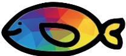

<!DOCTYPE html>
<html>
  <head>
    <title>My experiment</title>
    <!-- <script type="text/javascript" src="conditions.js"></script> -->
    <script src="https://unpkg.com/jspsych@7.0.0"></script>
    <script src="https://unpkg.com/@jspsych/plugin-call-function@1.1.3"></script>
    <script src="https://unpkg.com/@jspsych/plugin-instructions@1.0.0"></script>
    <script src="https://unpkg.com/@jspsych/plugin-image-button-response@1.0.0"></script>
    <script src="https://unpkg.com/@jspsych/plugin-audio-button-response@1.0.0"></script>
    <script src="https://unpkg.com/@jspsych/plugin-html-keyboard-response@1.0.0"></script>
    <script src="https://unpkg.com/@jspsych/plugin-html-button-response@1.0.0"></script>
    <script src="https://unpkg.com/@jspsych/plugin-preload@1.0.0"></script>
    <script src="https://unpkg.com/@jspsych/plugin-external-html@1.1.3"></script>
    <script src="https://nyc3.digitaloceanspaces.com/experiments.childlanglab/childlanglabClient.js"></script>
<script src="params_affix.js"></script>

    <link
      href="https://unpkg.com/jspsych@7.0.0/css/jspsych.css"
      rel="stylesheet"
      type="text/css"
    />
    <style>
       /* Prevent color change on hover */
    /* .jspsych-btn:hover {
      background-color:#f4f5f7; /* Maintain the same background color on hover */
    

    </style>
  </head>
  <!-- Use the task.js file in this folder -->
  <script>

      // childlanglabClient.sayHello()
      // childlanglabClient.sendData( [{"this":"that"}])

// initialize jsPsych 
var jsPsych = initJsPsych({
  default_iti: 0,
  show_progress_bar: true,
  on_start: function(){

  },
  on_finish: function () {
    // let data = jsPsych.data.get().json();
    // jsPsych.data.displayData();
    //window.location.replace("https://app.prolific.com/submissions/complete?cc=C1YFAOAM")
  },
});

// define the arrangment of choices so we can get the correct value 
var choice_position = ['r', 'n']

// define the counter to count correct trials
var count_correct = 0
var count_total = 0
var count_level = 0

// function to update correct counters 
function update_counters(data){
  // save what choice was 
  data.choice = choice_position[data.response]; 
  // increment the count total (we've gone up one total trial)
  count_total++

  // in increment the correct counter if we are correct 
    if(choice_position[data.response] === data.word_type){
      count_correct++
      data.is_correct = true;
    } else {
      data.is_correct = false;
    }
    // see what this looks like in the console
    console.log("updating counts", count_correct, count_total)
    console.log("data object", data)

};

// randomly assign participant to one of 3 lists 
var lists = [
  {name: "list1", list: LIST1}, 
  {name: "list2", list: LIST2},
  {name: "list3", list: LIST3}
]
var random_list = jsPsych.randomization.sampleWithReplacement(lists, 1)[0]
jsPsych.data.addProperties({list: random_list.name});

// function to get the stimuli list for each block 
function get_stimuli_list(list = [], block = ""){
  let stimuli_list = list.filter(trial => trial.block === block)
  return stimuli_list
}

// function to generate a random ISI in between each feedback trial 
// feedback trials are 300ms long (showing correct fish); random isi adds
// an additional X ms of blank screen in between hearing the sound
// either 100, 150, 200, 250, 300 ms (equivalent to 400, 450, 500, 550, or 600)
var random_isi = function(){
  var random_ms = jsPsych.randomization.sampleWithReplacement([300, 350, 400, 450, 500, 550, 600], 1)[0]
  return random_ms
}

var sendData = {
  type: jsPsychCallFunction,
  async: true,
  func: function (done) {
    let data = jsPsych.data.get().json();
    childlanglabClient.sendData(data);
    done("Sent data object to childlanglab-api")

  },
};
/* preload images */
var preload = {
  type: jsPsychPreload,
  images: PRELOAD.images,
  continue_after_error: false,
  show_detailed_errors: true,
  sounds: PRELOAD.sounds,
};

// function check_consent (elem) {
//     if (document.getElementById('consent_checkbox').checked) {
//         return true;
//     }
//     else {
//         alert("If you wish to participate, you must check the box next to the statement 'I agree to participate in this study.'");
//         return false;
//     }
//     return false;
// };

// var consent = {
//   type: jsPsychExternalHtml, 
//   url: "consent.html", 
//   cont_btn: "start", 
//   check_fn: check_consent
// }; 

/* define welcome message trial */
var welcome = {
  type: jsPsychHtmlButtonResponse,
  stimulus: "Welcome to the experiment. Press next when you are ready to begin.",
  choices: ["Next"]
};

var start = {
  type: jsPsychHtmlButtonResponse,
  stimulus: "Ready to start? Press next when you are ready.",
  choices: ["Next"]

};

var finish = {
  type: jsPsychHtmlKeyboardResponse,
  stimulus: "Sending data to our secure database...",
  trial_duration: 2000,
  response_ends_trial: false

};

var thanks = {
  type: jsPsychHtmlButtonResponse,
  stimulus: "Thanks for participating! Press finish to complete the study",
  choices: ["Finish"]

};


/* define instructions trial */
var instructions = {
  type: jsPsychInstructions,
  pages: [
    `<div>
      <p>In this experiment, there are two kinds of talking fish</p>
      <div style='float: left;'></div>
      <div style='float: right;'></img></div>
      </div>
    `,
    `<p>Gray fish always say <strong>real words</strong></p>
    <div></img></div><br>
    `,
    `<p>Rainbow fish always say <strong>silly words</strong></p>
    <div></img></div><br>
    `,
    `<p>There are also two hungry penguins</p>
      <div style='float: left;'></div>
      <div style='float: right;'></img></div><br>
    `,
    `<p>One penguin only eats fish who say <strong>real words</strong></p>
    <div></img></div><br>
    `,
    `<p>The other penguin only eats fish who say <strong>silly words</strong></p>
    <div></img></div><br>
    `,
    `<p>We will hide the color of the fish. </p>
    <div></div>
    </p>Your job is to guess which penguin will eat the fish based on the word it says.</p>
    <div style='width: 400px; margin:auto;'>
    <div style='float: left;'></img>
    <p class='small'>Only <strong>real words</strong></p></div>
    <div style='float: right;'></img>
    <p class='small'>Only <strong>silly words</strong></p></div>
    </div>`, 
    `<p>Keep in mind: the gray fish is very casual. This means that it will sometimes pronounce words in a more casual style (e.g. "cookin'" instead of "cooking").</p><p> You should consider these casual pronunciations <strong>real words</strong></p>`
  ],
  
  show_clickable_nav: true
};

// define break trials 
function get_break_trial(level){
  var takeBreak = {
    type: jsPsychHtmlButtonResponse,
    stimulus: function() {
      return `<p> Great job you completed Level ${count_level} of 5!</p><p>You got ${count_correct} of ${count_total} fish! You earned snowman #${count_level}! </p>`
    }  ,
    choices: ["Next"],
    prompt: "<p>Press next when you are ready to continue</p>"
}
  return takeBreak;
}; 

/*define prime and target trials */
var prime = {
  type: jsPsychImageButtonResponse,
  stimulus: "img/fish-blank-resize.png",
  choices: ["img/penguin-real.png", "img/penguin-silly.png"],
  prompt: function(){
    return `<p>Which penguin will eat this fish?</p><p>Level ${count_level}, Score  ${count_correct}</p>`
  },  
  button_html:
    '<button class="jspsych-btn"></button>',
  render_on_canvas: true,
  on_start: function () {
    // console.log("prime: " + jsPsych.timelineVariable("prime_sound"));
    // play audio at the start of the trial
    audio = new Audio();
    audio.src = jsPsych.timelineVariable("prime_sound");
    audio.play();
  },
  on_finish: function(data){
    update_counters(data); 
  },
  data: {
    is_target: false,
    word: jsPsych.timelineVariable("prime"),
    sound: jsPsych.timelineVariable("prime_sound"),
    which_correct: jsPsych.timelineVariable("prime_correct"),
    block:  jsPsych.timelineVariable("block"), 
    item: jsPsych.timelineVariable("item"), 
    type: jsPsych.timelineVariable("type"), 
    c_f_type: jsPsych.timelineVariable("c_f_type"), 
    word_type: jsPsych.timelineVariable("prime_type"), 
  }
};

var target = {
  type: jsPsychImageButtonResponse,
  stimulus: "img/fish-blank-resize.png",
  choices: ["img/penguin-real.png", "img/penguin-silly.png"],
  prompt: function(){
    return `<p>Which penguin will eat this fish?</p><p>Level ${count_level}, Score  ${count_correct}</p>`
  }, 
  button_html:
    '<button class="jspsych-btn"></button>',
  render_on_canvas: true,
  on_start: function () {
    // console.log("target: " + jsPsych.timelineVariable("target_sound"));
    // play audio at the start of the trial
    audio = new Audio();
    audio.src = jsPsych.timelineVariable("target_sound");
    audio.play();
  },
  on_finish: function(data){
    update_counters(data); 
  },
  data: {
    is_target: true,
    word: jsPsych.timelineVariable("target"),
    sound: jsPsych.timelineVariable("target_sound"),
    which_correct: jsPsych.timelineVariable("target_correct"),
    block:  jsPsych.timelineVariable("block"), 
    item: jsPsych.timelineVariable("item"), 
    type: jsPsych.timelineVariable("type"), 
    c_f_type: jsPsych.timelineVariable("c_f_type"), 
    word_type: jsPsych.timelineVariable("target_type"), 

  }
};

/* define prime and target feedback trials */
var prime_feedback = {
  type: jsPsychImageButtonResponse,
  stimulus: jsPsych.timelineVariable("prime_correct"),
  choices: ["img/penguin-real.png", "img/penguin-silly.png"],
  prompt: function(){
    return `<p>Which penguin will eat this fish?</p><p>Level ${count_level}, Score  ${count_correct}</p>`
  },   
  button_html: function(){
    // Get the data of the last trial
    var realSize = "200px";
    var sillySize = "200px"

    var lastTrialData = jsPsych.data.getLastTrialData();
    
    // Access values from the last trial
    var isCorrect = lastTrialData.select('is_correct').values[0]; // Adjust "response" to the appropriate key in your data
    var whichCorrect = lastTrialData.select('which_correct').values[0];
    console.log(isCorrect, whichCorrect);
    if(isCorrect & whichCorrect == "img/fish-real.png"){
      realSize = "250px"
    } else if(isCorrect & whichCorrect == "img/fish-silly.png"){
      sillySize = "250px"
    } 
    
    return [`<button class="jspsych-btn disabled"></button>`, `<button class="jspsych-btn disabled"></button>`]
  },
  render_on_canvas: true,
  trial_duration: 300,
  response_ends_trial: false,
  // post_trial_gap: random_isi,
  save_trial_parameters: {
    stimulus: true,
    trial_duration: true,
  }
};

var target_feedback = {
  type: jsPsychImageButtonResponse,
  stimulus: jsPsych.timelineVariable("target_correct"),
  choices: ["img/penguin-real.png", "img/penguin-silly.png"],
  prompt: function(){
    return `<p>Which penguin will eat this fish?</p><p>Level ${count_level}, Score  ${count_correct}</p>`
  },  
  button_html: function(){
    // Get the data of the last trial
    var realSize = "200px";
    var sillySize = "200px"

    var lastTrialData = jsPsych.data.getLastTrialData();
    
    // Access values from the last trial
    var isCorrect = lastTrialData.select('is_correct').values[0]; // Adjust "response" to the appropriate key in your data
    var whichCorrect = lastTrialData.select('which_correct').values[0];
    console.log(isCorrect, whichCorrect);
    if(isCorrect & whichCorrect == "img/fish-real.png"){
      realSize = "250px"
    } else if(isCorrect & whichCorrect == "img/fish-silly.png"){
      sillySize = "250px"
    } 
    
    return [`<button class="jspsych-btn disabled"></button>`, `<button class="jspsych-btn disabled"></button>`]
  },
 render_on_canvas: true,
  trial_duration: 300,
  response_ends_trial: false,
  // post_trial_gap: random_isi,
  save_trial_parameters: {
    stimulus: true,
    trial_duration: true,
  }
};

var isi = {
  type: jsPsychImageButtonResponse,
  stimulus: "img/fish-placeholder.png",
  choices: ["img/penguin-real.png", "img/penguin-silly.png"],
  prompt: function(){
    return `<p>Which penguin will eat this fish?</p><p>Level ${count_level}, Score  ${count_correct}</p>`
  }, 
  button_html:
    '<button class="jspsych-btn disabled"></button>',
  render_on_canvas: true,
  trial_duration: random_isi,
  response_ends_trial: false,
  save_trial_parameters: {
    stimulus: true,
    trial_duration: true,
  }
};

/* define blocks */
function get_block(which_block = ""){
  var block = {
    timeline: [prime, prime_feedback, isi, target, target_feedback, isi],
    timeline_variables: get_stimuli_list(random_list.list, which_block),
    repetitions: 1,
    randomize_order: true,
    on_timeline_start: function(){
      // at the start of the timeline, reset our correct counter to zero. 
      count_level++
      count_correct = 0; 
      count_total = 0; 
    },
  }
  return block; 
}; 

/* create timeline */
var timeline = [
  welcome,
  preload,
  instructions,
  start,
  get_block("practice"),
  get_break_trial(0), 
  get_block("a"), 
  get_break_trial(1),
  get_block("b"),
  get_break_trial(2),
  get_block("c"), 
  get_break_trial(3),
  get_block("d"),
  get_break_trial(4),
  sendData,
  finish, 
  thanks
];
/* start the experiment */
jsPsych.run(timeline);
  </script>
  <body></body>
</html>
